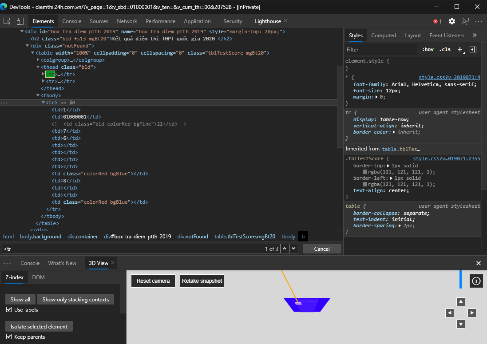

Scraping là gì?
Scraping đơn giản là trích xuất thông tin từ một hệ thống, cơ sở dữ liệu hoặc trang web... nào đó. Khác với crawling, scraping không thu thập toàn bộ thông tin mà chỉ thu thập những thông tin phù hợp với mục đích của người lập trình. Trong quá trình scrap, chúng ta vừa cần thu thập dữ liệu, vừa trích xuất dữ liệu (data extraction) để loại bỏ các thành phần không cần thiết và chỉ để lại dữ liệu đã làm sạch phù hợp với mục đích.
Trước khi bắt đầu scrap
Chúng ta cần quan tâm trang web có bật cơ chế chặn bot hay không. Nếu có chúng ta cần có các biện pháp đối phó đối với từng cơ chế phát hiện:
- Quá nhiều request từ cùng một IP => sử dụng các IP rotator cho mỗi request (Ex: StormProxies…)
- Phát hiện không hỗ trợ JS => sử dụng các headless browser (trình duyệt không có giao diện người dùng) như Selenium, Puppeteer…
- Cloudflare, sử dụng cookie, captcha để chặn bot: cái này mình chịu :<
Bắt đầu thôi
Để demo, mình sẽ scrap dữ liệu từ trang web tra cứu điểm thi của báo điện tử 24h. Có thể dùng các công cụ như Jupyter Notebook hoặc Google Colab để chạy demo này.
Trong demo này mình sẽ cần import các thư viện cần thiết là pandas, requests, bs4, numpy
import requests
import pandas
import bs4
import numpy as np
Sử dụng công cụ DevTools của Chromium (nhấn nút F12). Nhận thấy thông tin ta cần scrap nằm ở tab <tr> thứ 3, ta sẽ parse HTML ở tab này để lấy ra điểm ở các tab <td>

Ở đây mình sẽ ghi kết quả xuống file JSON để tiện dùng sau này. Thư viện pandas cho phép ghi dataframe xuống ở định dạng JSON hoặc CSV cực kì tiện lợi.
Source Code:
url = 'http://diemthi.24h.com.vn/?v_page=1&v_cum_thi=00&v_sbd='
def getPageContent(url, id):
page = requests.get(url+id)
return bs4.BeautifulSoup(page.text,"html.parser")
def fieldCleaner(field):
for j in range(len(field)):
if ((field[j]!='\r')&(field[j]!='\n')&(field[j]!=' ')):
field=(field)[j:]
break
for j in range(len(field)-1,0,-1):
if ((field[j]!='\r')&(field[j]!='\n')&(field[j]!=' ')):
field=(field)[:j+1]
break
return(field)
def removeDup(field):
field = str(field)
j=1
while (j<len(field)):
if (field[j]==field[j-1]):
field = field[:(j-1)]+field[j:]
j=j-1
j=j+1
return(field)
id = []
birthday = []
math = []
literature = []
fLang = []
phys = []
chem = []
bio = []
his = []
geo = []
civ = []
note = []
khxh = []
khtn = []
student_num=-1
for sbd in range (1000001,1100000):
idstr = '{0:08d}'.format(sbd)
content = getPageContent(url, idstr)
tr = content.find_all('tr')
if (len(tr)<3): continue
student_num = student_num+1
main = bs4.BeautifulSoup(str(tr[2]),"html.parser")
mainFields = main.find_all('td')
mainFields = [bs4.BeautifulSoup(str(field), "html.parser") for field in mainFields]
id.append(mainFields[1].find('td').text)
id[student_num]=fieldCleaner(id[student_num])
temp = mainFields[2].find('td').text
if (temp!=''):
math.append(float(temp))
else:
math.append(float(np.nan))
temp = mainFields[3].find('td').text
if (temp!=''):
literature.append(float(temp))
else:
literature.append(float(np.nan))
temp = mainFields[4].find('td').text
if (temp!=''):
fLang.append(float(temp))
else:
fLang.append(float(np.nan))
temp = mainFields[5].find('td').text
if (temp!=''):
phys.append(float(temp))
else:
phys.append(float(np.nan))
temp = mainFields[6].find('td').text
if (temp!=''):
chem.append(float(temp))
else:
chem.append(float(np.nan))
temp = mainFields[7].find('td').text
if (temp!=''):
bio.append(float(temp))
else:
bio.append(float(np.nan))
khtn_avg=(phys[student_num]+chem[student_num]+bio[student_num])/3
khtn.append(float("{:.2f}".format(khtn_avg)))
temp = mainFields[9].find('td').text
if (temp!=''):
his.append(float(temp))
else:
his.append(float(np.nan))
temp = mainFields[10].find('td').text
if (temp!=''):
geo.append(float(temp))
else:
geo.append(float(np.nan))
temp = mainFields[11].find('td').text
if (temp!=''):
civ.append(float(temp))
else:
civ.append(float(np.nan))
khxh_avg=(his[student_num]+geo[student_num]+civ[student_num])/3
khxh.append(float("{:.2f}".format(khxh_avg)))
df = pandas.DataFrame({'id':id,
'math':math,
'literature':literature,
'foreign lang':fLang,
'history':his,
'geo':geo,
'civ':civ,
'SS-Mean':khxh,
'phys':phys,
'chem':chem,
'bio':bio,
'NS-Mean':khtn})
df.to_json('data_points.json')